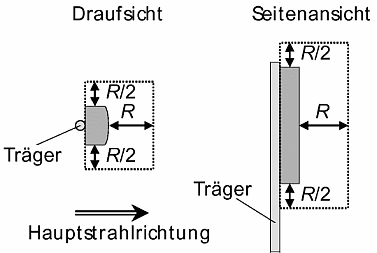
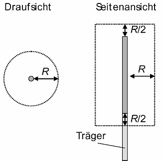

3.1.1
|
Drittes Kapitel Erster Abschnitt §3 |
| (1) Soweit nichts anderes bestimmt ist, richten sich die Festlegungen dieses Abschnittes an Unternehmer und Versicherte. |
3.1.2
| (2) Der Unternehmer hat dafür zu sorgen, dass in Arbeitsstätten und an Arbeitsplätzen weder unzulässige Expositionen noch unzulässige mittelbare Wirkungen durch EM-Felder auftreten. |
Hierzu prüft der Unternehmer, inwieweit auf seinem Betriebsgelände unzulässige Expositionen durch EM-Felder auftreten können. Kann der Unternehmer dies nicht selbst tun, sollte er sich sachkundig beraten lassen.
Siehe auch Abschnitt 3.7.2Zur Beurteilung der Exposition sind die in Anlage 1 zur Unfallverhütungsvorschrift festgelegten zulässigen Werte für die einzelnen Expositionsbereiche heranzuziehen.
Die Festlegungen der Unfallverhütungsvorschrift sind unter Zugrundelegung der ungünstigsten Bedingungen (maximale Exposition) erfüllt, wenn die von den Basiswerten abgeleiteten Werte eingehalten werden. Die abgeleiteten Werte gelten für den unbesetzten Arbeitsplatz; die Einhaltung ist personenbezogen zu bewerten.
Siehe Abschnitt 1.7 "Bewertungsverfahren" des Anhanges 1.Eine Exposition kann den gesamten Körper oder nur Körperteile betreffen. Zur Beurteilung sind alle am Arbeitsplatz von Anlagen, Maschinen und Geräten emittierten EM-Felder im Frequenzbereich von 0 Hz bis 300 GHz zu berücksichtigen.
3.2 Beurteilung der Expositionsbereiche
3.2.1
|
§ 4 |
(1) Der Unternehmer hat sicherzustellen, dass für Expositionsbereiche die zulässigen Werte in Anlage 1 nicht überschritten werden. Dazu hat er
|
Die Festlegung der Expositionsbereiche erfolgt unter Berücksichtigung der Nutzungsmerkmale und der vorhandenen Quellen. Dabei sind die Kriterien in den Begriffsbestimmungen zu berücksichtigen; siehe Abschnitt 2 Nr. 5 bis 8.
Die Exposition kann durch Berechnung, Messung (siehe Anhang 1, Messverfahren), Herstellerangaben oder Vergleich mit anderen Anlagen ermittelt werden. Ein Vergleich ist nur dann statthaft, wenn dies auf Grund von Anlagentyp und Randbedingungen begründbar ist.
3.2.2
| (2) Ist sichergestellt, dass die für den Expositionsbereich 2 zulässigen Werte nicht überschritten werden, sind Maßnahmen nicht erforderlich. §12 bleibt hiervon unberührt. |
Ergibt die Untersuchung, dass die zulässigen Werte des Expositionsbereiches 2 nicht überschritten werden, sind weitere Maßnahmen nicht erforderlich. Dies bedeutet, dass die Paragraphen 5 bis 16, ausgenommen §12, der Unfallverhütungsvorschrift für den Betrieb dieser Anlagen nicht relevant sind. Insbesondere ist auch keine Dokumentation erforderlich.
Übliche Elektrowerkzeuge, Haushaltsgeräte, Geräte der Bürokommunikation, insbesondere Bildschirmgeräte, Elektroanlagen in Gebäuden, Motoren und Pumpen mit niedriger Anschlussleistung liegen mit ihren Emissionswerten weit unterhalb der zulässigen Werte für Expositionsbereich 2. Bei hohen Anschlussleistungen von elektrischen Anlagen z.B. Hochspannungsschaltanlagen, Bahnanlagen, Motoren usw. oder Schweißgeräten, Induktionsanlagen, Galvaniken, Elektrolyseanlagen, Schmelzöfen oder Hochfrequenzanlagen können die zulässigen Werte für Expositionsbereich 2 überschritten sein.
Da auch bei Feldstärken unterhalb der zulässigen Werte für den Expositionsbereich 2 mittelbare Wirkungen auftreten können, ist in jedem Fall Abschnitt 3.10 "Mittelbare Wirkungen" zu beachten.
Besonders betroffen sind hier Personen mit Herzschrittmachern oder anderen aktiven oder passiven Körperhilfen.
3.2.3
| (3) Werden in festgelegten Expositionsbereichen die jeweils zulässigen Werte überschritten, so sind umgehend Maßnahmen anzuwenden, die verhindern, dass unzulässige Expositionen auftreten. |
Maßnahmen zu diesem Zweck können sein:
Technischen Maßnahmen ist grundsätzlich der Vorzug zu geben.
Persönliche Schutzausrüstungen und organisatorische Maßnahmen sind dann anzuwenden, wenn technische Maßnahmen nicht ausreichen oder nicht anwendbar sind.
3.2.4
| (4) Nach Änderungen von Geräten und Anlagen, die feldrelevant sein können, hat eine erneute Beurteilung nach den Absätzen 1 bis 3 zu erfolgen. |
Feldrelevante Änderungen sind solche, die eine wesentliche Veränderung der Expositionsbedingungen nach sich ziehen.
3.3.1
|
§ 5 |
| (1) Der Unternehmer hat für Anlagen und Geräte, deren EM-Felder die zulässigen Werte des Expositionsbereiches 2 überschreiten, Betriebsanweisungen aufzustellen. Diese müssen die für den sicheren Betrieb notwendigen Angaben enthalten und auf die Möglichkeit der Exposition durch EM-Felder hinweisen. |
Hier wird der Unternehmer verpflichtet, für Anlagen, Maschinen und Geräte, die EM-Felder erzeugen, Angaben zu machen, die spezielle Kriterien dieser Felder berücksichtigen, auf besondere Gefahren hinzuweisen sowie die Verwendung von geeigneten Schutz- und Hilfsmitteln oder persönlicher Schutzausrüstungen vorzuschreiben.
In der Regel enthält die Betriebsanleitung des Herstellers (Benutzerinformation) wichtige Hinweise für die Erstellung der Betriebsanweisung. Für Erprobung, Inbetriebnahme und Instandhaltung ist gegebenenfalls diese entsprechend zu ergänzen, oder es sind eigene Festlegungen zu treffen, um diese Arbeiten sicher durchführen zu können.
Soweit erforderlich, sind im Bedienbereich einer Anlage Auszüge aus den Betriebsanweisungen an gut sichtbarer Stelle auszuhängen.
Beispiele für Betriebsanweisungen befinden sich in Anhang 5.
3.3.2
| (2) Die Versicherten haben die in den Betriebsanweisungen enthaltenen Festlegungen zu befolgen. |
Wesentliche Grundlage für eine sichere Betriebsweise ist, dass die Versicherten die in den Betriebsanweisungen für diese Anlagen, Maschinen und Geräte getroffenen Festlegungen beachten.
Siehe auch Abschnitt 3.8 "Unterweisung"
3.4 Bereiche erhöhter Exposition, Gefahrbereiche
3.4.1
|
§ 6 |
| (1) Der Unternehmer hat Bereiche erhöhter Exposition und Gefahrbereiche zu bestimmen. Er hat das Ergebnis zu dokumentieren. |
Bereiche erhöhter Exposition und Gefahrbereiche bedürfen einer besonderen Aufmerksamkeit und sind für den sicheren Betrieb von erheblicher Bedeutung. Aus diesem Grunde hat der Unternehmer die Bereiche erhöhter Exposition und die Gefahrbereiche zu ermitteln.
Die Ermittlung darf durch Messung, Rechnung oder Übertragung der Werte vergleichbarer Anlagen unter Zugrundelegung der ungünstigsten Betriebsbedingungen vorgenommen werden.Siehe Anhang 1 "Messverfahren".
Eine Dokumentation dieser Ergebnisse ist notwendig, da die Möglichkeit einer Überprüfung gegeben sein muss.
Siehe auch Abschnitt 3.7 "Prüfung".
3.4.2
| (2) Der Unternehmer hat bei feldrelevanten Änderungen von Anlagen und Geräten die Bereiche erhöhter Exposition und die Gefahrbereiche neu zu bestimmen. Er hat die Änderungen zu dokumentieren. |
Siehe auch Abschnitt 3.2.4.
3.4.3
| (3) Der Unternehmer hat Bereiche erhöhter Exposition zu kennzeichnen. |
Zum sicheren Betrieb von Anlagen, Maschinen und Geräten ist die Kennzeichnung der Bereiche erhöhter Exposition erforderlich.
Siehe Abschnitt 3.5.
3.4.4
| (4) Absatz 3 gilt nicht, wenn durch Konstruktion und Betriebsweise der Anlage die Sicherheit auf andere Art gewährleistet wird. |
Wird durch eine geeignete Verriegelung verhindert, dass diese Bereiche zugänglich sind, kann eine Kennzeichnung entfallen. Dies gilt auch, wenn durch Konstruktion und Anordnung der Anlagenteile ein entsprechender Schutz erreicht wird.
Bei Mobilfunkbasisstationen siehe Abschnitt 3.5.4.
3.4.5
| (5) Der Unternehmer hat Bereiche erhöhter Exposition so zu sichern, dass sich innerhalb dieser Bereiche während des Betriebes von Anlagen und Geräten keine unbefugten Personen aufhalten können. |
Die Sicherung von Bereichen erhöhter Exposition, z.B. durch Seile, Ketten, Leisten, kann durch entsprechende Sicherheitskennzeichnung sowie Unterweisung der Versicherten erreicht werden. In Sonderfällen kann es auf Grund besonderer Betriebsumstände notwendig sein, solche Bereiche durch Verriegelungen oder Verschluss zu sichern.
3.4.6
(6) Der Unternehmer hat dafür zu sorgen, dass in Bereichen erhöhter Exposition nur hierzu befugte Personen tätig werden, wenn
|
Dieser Absatz regelt das Betreten und den Zugang zu Bereichen erhöhter Exposition durch befugte Personen. Bei organisatorischen Maßnahmen ist zu empfehlen, eine angemessene Aufsichtführung zu gewährleisten.
Siehe auch Abschnitt 3.13.1 "Instandhaltung, Erprobung".
Sind organisatorische Maßnahmen nicht sicherzustellen, sind persönliche Schutzausrüstungen zu benutzen oder Maßnahmen an der Quelle vorzunehmen, z.B. Reduzierung der Leistung. Soweit erforderlich, ist abzuschalten.
3.4.7
| (7) Der Unternehmer hat Gefahrbereiche zu kennzeichnen und durch dauerhafte Abgrenzungen oder Schutzeinrichtungen so zu sichern, dass während des Betriebes Personen nicht hineingreifen, hineingelangen oder sich darin aufhalten können. In abgeschlossenen Betriebsstätten, zu denen nur befugte Personen Zugang haben, ist eine Kennzeichnung des Gefahrbereiches ausreichend. |
Das Sichern des Gefahrbereiches bedeutet, dass dieser Bereich abgegrenzt und unter Verschluss gehalten wird. Die Abgrenzung des Gefahrbereiches muss so weit entfernt erfolgen, dass der Gefahrbereich nicht erreicht werden kann.
Siehe DIN EN 294 "Sicherheit von Maschinen; Sicherheitsabstände gegen das Erreichen von Gefahrstellen mit den oberen Gliedmaßen".
Werden Verriegelungen benutzt, um den Zugang zu Gefahrbereichen zu verhindern, müssen die entsprechenden Sicherheitsschaltungen mindestens die Anforderungen der Kategorie 3 nach DIN EN 954-1 "Sicherheit von Maschinen - Sicherheitsbezogene Teile von Steuerungen-Teil 1: Allgemeine Gestaltungsleitsätze" erfüllen.
Kategorie 3 nach der DIN EN bedeutet:
Sicherheitsbezogene Teile von Steuerungen der Kategorie 3 müssen so gestaltet sein, dass ein einzelner Fehler in einem dieser Teile nicht zum Verlust der Sicherheitsfunktion führt, also "Einfehlersicher" ist.
In abgeschlossenen Betriebsstätten ist eine Kennzeichnung durch Sicherheitszeichen und erforderlichenfalls Warnleuchten ausreichend, wenn nur befugte Personen Zugang haben und entsprechende organisatorische Maßnahmen dies sicherstellen.
3.4.8
| (8) Ist ein Gefahrbereich von der Betriebsweise der Anlage abhängig, so hat der Unternehmer durch ständige Kontrolle sicherzustellen, dass Versicherte nicht unzulässigen Expositionen ausgesetzt sind. |
Die ständige Kontrolle kann sich z.B. an der Betriebsweise der Anlage orientieren und entsprechend den Betriebsbedingungen kontinuierlich oder diskontinuierlich erfolgen. Bei wechselnden Betriebsweisen ist besonders der Abschnitt 3.5 zu beachten.
3.4.9
| (9) Ist ein Gefahrbereich nicht eindeutig zu bestimmen oder zeitlichen Änderungen unterworfen, so hat der Unternehmer durch wiederholte Messungen der EM-Felder im Arbeitsbereich sicherzustellen, dass für die Versicherten keine unzulässige Exposition besteht. |
Auf wiederholte Messungen kann verzichtet werden, wenn der Gefahrbereich unter Berücksichtigung aller bestimmungsgemäßen Betriebszustände gesichert ist.
3.4.10
| (10) Abweichend von Absatz 7 dürfen Versicherte in Gefahrbereichen tätig werden, wenn durch geeignete persönliche Schutzausrüstungen eine unzulässige Exposition ausgeschlossen ist. |
Siehe auch Abschnitt 3.6.
3.5 Kennzeichnung und Abgrenzung
3.5.1
|
§ 7 |
| (1) Der Unternehmer hat sicherzustellen, dass die Kennzeichnung nach dieser Unfallverhütungsvorschrift deutlich erkennbar und dauerhaft durch Warn -, Hinweis - und Zusatzzeichen sowie Verbotszeichen und Warnleuchten erfolgt. |
Deutlich erkennbar bedeutet, dass diese von den entsprechenden Verkehrs- bzw. Arbeitswegen oder allen anderen Zugangsmöglichkeiten wahrgenommen werden können. Die dauerhafte Kennzeichnung verlangt, dass die Sicherheitszeichen nicht einfach entfernt oder durch Umgebungseinflüsse unkenntlich werden können.
Sicherheitszeichen sind entsprechend der Unfallverhütungsvorschrift "Sicherheits- und Gesundheitsschutzkennzeichnung am Arbeitsplatz" (BGV A 8, bisherige VBG 125) sowie Anhang 4 auszuführen.
Beispiele für Verbots-, Warn - und Hinweiszeichen in den Expositionsbereichen siehe Anhang 4.
3.5.2
| (2) Der Unternehmer hat sicherzustellen, dass Abgrenzungen nach dieser Unfallverhütungsvorschrift so ausgeführt sind, dass sie die erforderliche Sicherheit bieten. |
3.5.3
| (3) Müssen zur Durchführung von Arbeiten nach § 15 ständige Abgrenzungen entfernt werden, sind diese nach Beendigung der Arbeiten wieder anzubringen. Die zur Durchführung dieser Arbeiten nur vorübergehend angebrachten Abgrenzungen sind dagegen nach Beendigung der Arbeiten wieder zu entfernen. Erst danach dürfen die Anlagen vom Verantwortlichen wieder zum Betrieb freigegeben werden. |
Bei Abgrenzungen ist zu unterscheiden, ob es sich um ständige Schutzeinrichtungen handelt, oder solche, die nur vorübergehend, z.B. zur Durchführung von Instandhaltungsarbeiten, angebracht wurden.
3.5.4
Für Mobilfunkanlagen nach GSM-, TETRA oder UMTS-Standard sind durch den Betreiber die Sicherheitsabstände zu bestimmen, in dem die Basiswerte nach Tabelle 1 der Anlage 1 zur Unfallverhütungsvorschrift sicher eingehalten werden. Üblicherweise beträgt bei Mobilfunkantennen der Sicherheitsabstand in Hauptstrahlrichtung 50 cm. Werden andere Funkanwendungen am gleichen Standort betrieben, so ist die Überlagerung der EM-Felder bei der Ermittlung des Sicherheitsabstandes zu berücksichtigen.
Aus dem Sicherheitsabstand in Hauptstrahlrichtung R (Bild 1) ergeben sich in andere Richtungen auf Grund der Richtstrahlcharakteristik von Mobilfunkantennen folgende Sicherheitsabstände als Funktion von R.

Bei Rundstrahlantennen gilt der Sicherheitsabstand gleichmäßig um die Antenne:

Weicht der Sicherheitsabstand in Hauptstrahlrichtung von 50 cm ab, muss bei Überschreitung grundsätzlich gekennzeichnet werden. Der notwendige Sicherheitsabstand muss dann auf einem Hinweisschild angezeigt werden. Die Grösse des Warnzeichens ist dem Sicherheitsabstand gemäß der Unfallverhütungsvorschrift "Sicherheits- und Gesundheitsschutzkennzeichnung am Arbeitsplatz" (BGV A 8, bisherige BGV A8) anzupassen.
Eine Kennzeichnung kann entfallen, wenn sich Versicherte in diesem Abstand ohne zusätzliche Hilfsmittel (z.B. Leiter, Gerüst) an den Antennen nicht aufhalten können.
Eine Kennzeichnung der einzelnen Antennen ist nicht erforderlich, wenn die Kennzeichnung im Zugangsbereich erfolgt.
3.6 Persönliche Schutzausrüstungen
3.6.1
|
§ 8 |
| (1) Der Unternehmer hat geeignete persönliche Schutzausrüstungen auszuwählen und den Versicherten zur Verfügung zu stellen |
Persönliche Schutzausrüstungen sind geeignet, wenn bei ihrer Benutzung keine unzulässige Exposition auftreten kann. Hierzu gehören sowohl eine Prüfung durch den Benutzer auf äußerlich erkennbare Schäden und Mängel vor der Anwendung als auch eine regelmäßige Prüfung durch einen Sachkundigen im Hinblick auf die Beschaffenheitsanforderungen, eventuell durch eine entsprechende Prüfstelle.
Nicht für alle Anwendungsfälle sind persönliche Schutzausrüstungen verfügbar. Für elektrische Felder sind Schutzausrüstungen mit unterschiedlichen Dämpfungsfaktoren im gesamten Frequenzbereich erhältlich. Persönliche Schutzausrüstungen stehen für magnetische Felder nur eingeschränkt zur Verfügung, da diese für Frequenzen unterhalb ca. 10 MHz keine Schutzwirkung haben. Bei der Auswahl der persönlichen Schutzausrüstungen ist zu prüfen, ob der frequenzabhängige Dämpfungsfaktor die Schutzfunktion gewährleistet.
Beispiele:
3.6.2
| (2) Die Versicherten haben die zur Verfügung gestellten persönlichen Schutzausrüstungen zu benutzen. |
Dies ergibt sich aus § 15 Arbeitsschutzgesetz und § 30 der Unfallverhütungsvorschrift "Grundsätze der Prävention" (BGV A1).
3.7.1
|
§ 9 |
(1) Der Unternehmer hat dafür zu sorgen, dass die Einhaltung der Festlegungen dieser Unfallverhütungsvorschrift wie folgt geprüft wird:
|
Die Prüfung vor der ersten Inbetriebnahme kann durch eine entsprechende Prüfbescheinigung des Herstellers oder Errichters nachgewiesen werden.
3.7.2
| (2) Die Prüfung hat durch einen Sachkundigen zu erfolgen. |
Sachkundiger ist, wer auf Grund fachlicher Ausbildung und Erfahrung ausreichende Kenntnisse auf dem Gebiet der EM-Felder hat und mit den einschlägigen staatlichen Arbeitsschutzvorschriften, Unfallverhütungsvorschriften und allgemein anerkannten Regeln der Technik (z.B. BG-Regeln, DIN-Normen, VDE-Bestimmungen, technische Regeln anderer Mitgliedstaaten der Europäischen Union oder der Türkei oder anderer Vertragsstaaten des Abkommens über den Europäischen Wirtschaftsraum) soweit vertraut ist, dass er den arbeitssicheren Zustand der Anlagen, Maschinen und Geräte beurteilen kann.
3.7.3
| (3) Der Unternehmer hat dafür zu sorgen, dass die Prüffristen so bemessen sind, dass entstehende Mängel, mit denen gerechnet werden muss, rechtzeitig festgestellt werden. |
Bei der Festlegung der Prüffristen sind die betriebsspezifischen Bedingungen und Prüfungen auf Grund anderer Vorschriften zu berücksichtigen. Als Richtwert gilt eine Prüffrist von 12 Monaten. Ein Richtwert wird angegeben, um dem Unternehmer einen Anhaltspunkt zu geben. Diese Prüffrist hängt von den betriebsspezifischen Beanspruchungen ab. Sie muss bei hohen Beanspruchungen verkürzt, kann aber bei geringen Beanspruchungen auch verlängert werden.
Für ortsfeste Anlagen, Maschinen und Geräte kann die regelmäßige Prüfung entfallen, wenn diese ständig überwacht werden. Anlagen gelten als ständig überwacht, wenn sie von Sachkundigen instandgehalten und durch messtechnische Maßnahmen im Rahmen des Betreibens geprüft werden.
3.8.1
|
§ 10 |
| (1) Der Unternehmer hat die Versicherten über die bei ihren Tätigkeiten auftretenden Gefahren sowie über die Maßnahmen zu ihrer Abwendung vor Beginn der Tätigkeit und danach in angemessenen Zeitabständen, mindestens jedoch einmal jährlich, zu unterweisen. |
Siehe § 12 Arbeitsschutzgesetz.
Die Unterweisung hat das Ziel, die Versicherten entsprechend ihrer Tätigkeit über die Gefahren durch EM-Felder in den verschiedenen Bereichen zu informieren und sie mit den vorhandenen Schutzeinrichtungen und mit den erforderlichen Schutzmaßnahmen vertraut zu machen, damit Schädigungen durch EM-Felder verhindert werden. Die Unterweisung ist mindestens jährlich durchzuführen.
Inhalt der Unterweisung sollte z.B. sein:
Halten sich Versicherte nur kurzzeitig in den Bereichen erhöhter Exposition auf und befinden sie sich in Begleitung eines Aufsichtführenden, genügt eine Kurzunterweisung.
Aufsichtführender ist, wer die Durchführung von Arbeiten zu überwachen und für die betriebssichere Ausführung zu sorgen hat. Er muss hierfür ausreichende Kenntnisse und Erfahrungen besitzen sowie weisungsbefugt sein.
3.8.2
| (2) Der Unternehmer hat Versicherte, die in Gefahrbereichen tätig sind, alle 12 Monate zu unterweisen. Die Unterweisungen sind zu dokumentieren. |
Tätigkeiten in Gefahrbereichen erfordern besondere Voraussetzungen und bedürfen besonderer Maßnahmen. Deshalb wird als Frist für die regelmäßige Unterweisung ein Richtwert von 12 Monaten festgelegt. Zusätzlich ist auf das spezielle Erfordernis hinsichtlich Verhalten und Nutzung von persönlichen Schutzausrüstungen hinzuweisen.
Die regelmäßige Unterweisung innerhalb von 12 Monaten kann auch durch eine Unterweisung vor Aufnahme der Tätigkeit im Gefahrbereich ersetzt werden.
Alle Unterweisungen, die Tätigkeiten im Gefahrbereich betreffen sowie solche über Schutz - und Sicherheitsmaßnahmen und Notfallsituationen, sind mit Datum, Inhalt der Unterweisung, Namen der unterweisenden Person und Unterschrift der Unterwiesenen zu dokumentieren.
3.9 Anlagenspezifische Dokumentation
|
§ 11 |
| Angaben zur Anlage in Bezug auf EM-Felder, zu Bereichen erhöhter Exposition und Gefahrbereichen sowie zu feldrelevanten Änderungen und Prüfprotokolle sind vom Unternehmer während der Betriebszeit der Anlage zugänglich und mindestens 10 Jahre nach Außerbetriebstellung aufzubewahren. |
Entsprechende Daten dienen als Beleg für die Erfüllung der Fürsorgepflicht.
Zugänglich bedeutet, dass sich Sachkundige jederzeit über den Anlagenzustand informieren und der Träger der gesetzlichen Unfallversicherung diese einsehen kann.
3.10 Mittelbare Wirkungen, Körperhilfsmittel
3.10.1
|
Zweiter Abschnitt § 12 |
| (1) Der Unternehmer hat durch technische Maßnahmen zu verhindern, dass Versicherte durch Energien gefährdet werden, die durch EM-Felder an elektrisch leitfähigen Gegenständen erzeugt werden. |
In leitfähige Gegenstände, z.B. Krane, Metallkonstruktionen usw., können durch EM-Felder Energien induziert bzw. influenziert werden. Eine daraus entstehende Gefährdung, z.B. durch Schreckreaktionen, kann verhindert werden, wenn die Körperströme und Berührungsspannungen aus solchen Quellen die in Tabelle 13 der Anlage 1 enthaltenen Werte nicht überschreiten.
Die in Tabelle 13 der Anlage 1 enthaltenen Werte gelten nicht für Rohrleitungsnetze sowie Telekommunikationsleitungen, die als Bestandteil der Netze durch Starkstromanlagen der elektrischen Bahnen oder der Energieversorgung beeinflusst werden können. Diese unterliegen auf Grund der spezifischen Einkopplungsbedingungen einer besonderen Kontrolle. Detaillierte Angaben hierzu sind enthalten in DIN VDE 0228 sowie in den technischen Empfehlungen der "Schiedsstelle für Beeinflussungsfragen (SfB)".
3.10.2
| (2) Besteht die Möglichkeit, dass Systeme infolge einer Beeinflussung durch EM-Felder versagen und dadurch Versicherte gefährdet werden, hat der Unternehmer dies durch technische oder organisatorische Maßnahmen zu verhindern. |
Anlagen, Maschinen und Geräte können bereits bei geringeren als den hier betrachteten Feldstärken gestört werden. Deshalb sind neben den zulässigen Werten der Unfallverhütungsvorschrift auch die Festlegungen des Gesetzes über die elektromagnetische Verträglichkeit von Geräten (EMVG) zu beachten.
3.10.3
| (3) Für Personen mit aktiven oder passiven Körperhilfsmitteln sind besondere Maßnahmen erforderlich, durch die Funktionsstörungen der Körperhilfsmittel oder Schädigungen der Person verhindert werden. Der Unternehmer hat alle Versicherten auf solche möglichen Gefährdungen hinzuweisen. Versicherte haben den Unternehmer über eine Versorgung mit Körperhilfsmitteln zu informieren, damit der Unternehmer notwendige Maßnahmen ergreifen kann. |
Besondere Maßnahmen sind für Personen mit Körperhilfsmitteln erforderlich, da sich einerseits passive Implantate und das sie umgebende Körpergewebe unter Feldeinfluss erwärmen und die lokale Stromdichte im Gewebe erhöhen können und andererseits aktive Körperhilfsmittel, z.B. Herzschrittmacher, Insulinpumpen, in ihrer Funktion relevant gestört werden können.
Solche Maßnahmen sind vorzugsweise Zugangsbeschränkungen. Diese können durch eine generelle organisatorische Regelung für Personen mit Körperhilfen oder entsprechende Kennzeichnung der in Frage kommenden Bereiche realisiert werden.
Für Versicherte mit passiven Implantaten, z.B. künstliche Gelenke, Schädelplatten, sind Zugangsbeschränkungen im Allgemeinen nicht erforderlich, wenn die zulässigen Werte für Expositionsbereich 1 eingehalten sind. Für solche Versicherte ist der Zugang zu Bereichen erhöhter Exposition im Einzelfall zu regeln.
Versicherte, die aktive Körperhilfsmittel tragen, dürfen nur dann an Arbeitsplätzen uneingeschränkt beschäftigt werden, wenn der Hersteller die Störfestigkeit der Körperhilfsmittel für die einwirkenden Felder garantiert. Ist dies nicht gegeben, darf über die Beschäftigung nur nach messtechnischer Untersuchung und Bewertung des Arbeitsplatzes entschieden werden. Die Bewertung hat nach den Festlegungen des Anhanges 3 zu erfolgen.
3.11 Versuchsanlagen und ortsveränderliche Quellen
3.11.1
|
§ 13 |
| (1) Der Unternehmer hat dafür zu sorgen, dass bei Versuchsanlagen und ortsveränderlichen Quellen Gefahrbereiche abgegrenzt, gekennzeichnet und durch rote Warnleuchten der Betriebszustand "EIN" angezeigt werden. |
EM-Felder von Versuchsanlagen und ortsveränderlichen Quellen können ständigen Veränderungen unterworfen sein. Diesem Umstand ist bei Abgrenzung und Kennzeichnung Rechnung zu tragen. Es wird empfohlen zusätzlich durch grüne Signalleuchten anzuzeigen, wenn die entsprechende Feldquelle nicht in Betrieb, jedoch betriebsbereit ist.
3.11.2
| (2) Der Unternehmer hat die Zugangsstellen zu Bereichen erhöhter Exposition zu kennzeichnen. |
Siehe hierzu auch Abschnitt 3.5 und Anhang 4.
Mobilfunkgeräte, Handfunksprechgeräte sowie alle drahtlos wirkenden Telekommunikationseinrichtungen, z.B. Fernsteuerungen, entsprechen den Anforderungen der Unfallverhütungsvorschrift, wenn sie gemäß den Anforderungen nach Artikel 3 der R&TTE-Richtlinie (1999/5/EC) der EU gefertigt wurden und die Konformität bescheinigt ist.
3.11.3
3.12 Anlagen mit hohen statischen Magnetfeldern
3.12.1
|
§ 14 |
| (1) Anstelle der nach § 4 zulässigen Werte dürfen bei hohen statischen Magnetfeldern die Werte nach Tabelle 1 der Anlage 2 zur Bewertung der Exposition von Versicherten zugrunde gelegt werden, wenn sichergestellt ist, dass zusätzlich die Festlegungen der Absätze 2 bis 8 erfüllt sind. |
Hohe statische Magnetfelder sind solche, deren Werte die zulässigen Werte des Expositionsbereichs 1 überschreiten.
Anlagen mit hohen statischen Magnetfeldern können z.B. Magnetresonanz-Tomographen, MR-Spektroskopieanlagen, Beschleuniger, Galvanik- und Elektrolyseanlagen sein.
Die zulässigen Werte für statische Magnetfelder im Expositionsbereich 1 wurden auf Grund der Kraftwirkung auf metallische Gegenstände festgelegt.
Deshalb können für statische Magnetfelder höhere Werte, die sich an der Reizschwelle orientieren, zugelassen werden, wenn durch die angegebenen Maßnahmen Gefährdungen durch Kraftwirkungen verhindert werden.3.12.2
| (2) Der Unternehmer hat sicherzustellen, dass Gefährdungen durch Kraftwirkungen statischer Magnetfelder verhindert sind. |
Maßnahmen, die geeignet sind, das sicherheitsbewusste Verhalten zu unterstützen oder Gefährdungen zu verhindern, müssen genutzt werden. Dazu gehören z.B.:
3.12.3
| (3) Der Unternehmer hat Bereiche, in denen die zulässigen Werte nach Anlage 2 zur Anwendung kommen, gegen unbefugtes Betreten zu sichern. |
Der Unternehmer hat dies durch Maßnahmen, z.B. Zugangsbeschränkungen, zu regeln.
3.12.4
| (4) Versicherte dürfen in diesen Bereichen nur tätig werden, wenn dies für sie gefahrlos möglich ist. |
Der Aufenthalt für Versicherte ist als gefahrlos anzusehen, wenn keine gesundheitlichen Bedenken vorliegen. Die gesundheitliche Unbedenklichkeit ist durch medizinische Beurteilung festzustellen.
3.12.5
| (5) Der Unternehmer hat die Versicherten über die besonderen Wirkungen, z.B. Kraftwirkungen und Wirkungen auf elektronische und medizinische Geräte, zu unterweisen. |
Siehe auch Abschnitt 3.8.
3.12.6
| (6) Der Unternehmer hat auf die besonderen Wirkungen und Gefährdungen durch Kennzeichnung hinzuweisen. |
Zur Kennzeichnung sind die in Anhang 4 dargestellten Warn -, Hinweis- und Verbotszeichen zu benutzen.
3.12.7
| (7) Der Unternehmer hat dafür zu sorgen, dass bei Versicherten mit aktiven oder passiven Körperhilfsmitteln sowie ferromagnetischen oder leitfähigen Fremdkörpern individuell über den Einsatz entschieden wird. |
Siehe auch Abschnitt 3.10.3.
3.12.8
| (8) Der Unternehmer hat für Versicherte nach Absatz 7 eine eindeutige Zugangsregelung zu treffen. Er hat die Grenzen der zulässigen Aufenthaltsbereiche deutlich zu kennzeichnen. |
Für Personen mit Herzschrittmacher ist die Grenze des Aufenthaltsbereichs auf der Basis eines zulässigen Wertes von 0,7 mT festgelegt. Die Kennzeichnung kann in Form einer Linie gleicher magnetischer Flussdichte (0,7 mT) oder durch Sicherheitskennzeichnung vorgenommen werden. Für andere aktive Körperhilfsmittel ist in Abhängigkeit von deren Störempfindlichkeit eine Festlegung im Einzelfall zu treffen.
Für passive Körperhilfsmittel siehe auch Abschnitt 3.10.3.
3.13 Instandhaltung, Erprobung
3.13.1
|
§ 15 |
| (1) Der Unternehmer hat dafür zu sorgen, dass Instandhaltungsarbeiten nach den Festlegungen in der Betriebsanweisung durchgeführt werden. |
Instandhaltung umfasst Wartung, Inspektion und Instandsetzung; siehe auch DIN 31 051 "Grundlagen der Instandhaltung".
Die Forderung nach einer Betriebsanweisung (siehe Abschnitt 3.3) ist begründet, da Instandhaltungsarbeiten in der Regel unter nicht betriebsmäßigen Abläufen vorgenommen werden. Die Betriebsanweisung sollte auch die Forderung enthalten, dass die notwendigen technischen Einrichtungen vorhanden sind, um Wartungs- und Instandsetzungsarbeiten sicher durchführen zu können und die Versicherten speziell für diese Arbeiten unterwiesen sind.
3.13.2
| (2) Der Unternehmer hat dafür zu sorgen, dass Instandhaltungsarbeiten im Bereich erhöhter Exposition nur unter entsprechender Aufsicht eines Sachkundigen durchgeführt werden. |
Die Forderung nach einer entsprechenden Aufsicht ist in Anlehnung an die Unfallverhütungsvorschrift "Elektrische Anlagen und Betriebsmittel" (BGV A3) zu sehen. Eine entsprechende Aufsicht kann je nach Art, Umfang und Schwierigkeitsgrad der Arbeiten bedeuten, dass eine Beaufsichtigung oder Aufsichtführung zu gewährleisten ist.
Die Aufsicht durch einen Sachkundigen bedeutet, dass dieser mitarbeiten darf, dies jedoch nur in dem Maße, dass er in der Aufsichtführung nicht behindert wird.
3.13.3
(3) Sind Instandhaltungsarbeiten im Gefahrbereich unumgänglich, so hat der Unternehmer dafür zu sorgen, dass
|
Beaufsichtigung bedeutet, dass zwingend eine zweite Person anwesend ist, die nicht mitarbeitet, sondern nur die mit den Arbeiten beschäftigten Personen beaufsichtigt und darauf achtet, dass die Sicherheitsmaßnahmen eingehalten sind. Die mit der Beaufsichtigung beauftragte Person darf nur Tätigkeiten ausführen, die sie in ihrer Beaufsichtigung nicht beeinträchtigt.
Aufsichtführender ist, wer die Arbeiten zu überwachen und für ihre sichere Durchführung zu sorgen hat. Er muss hierfür ausreichende Kenntnisse und Erfahrungen besitzen sowie weisungsbefugt sein.3.13.4
| (4) Für Erprobungen sind die Absätze 1 bis 3 sinngemäß anzuwenden. |